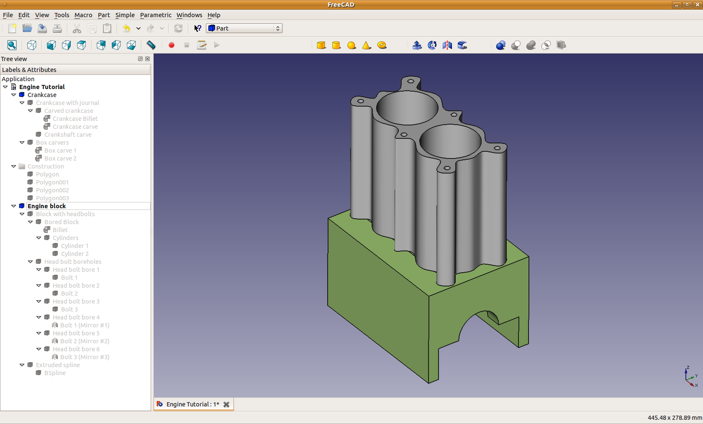
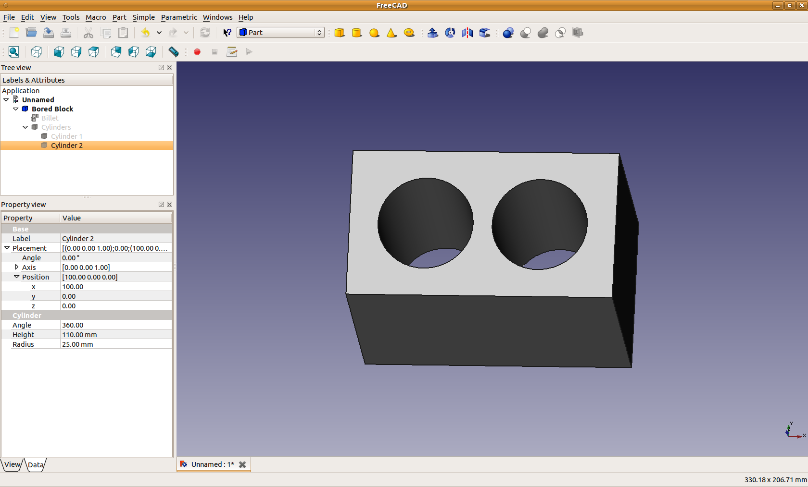
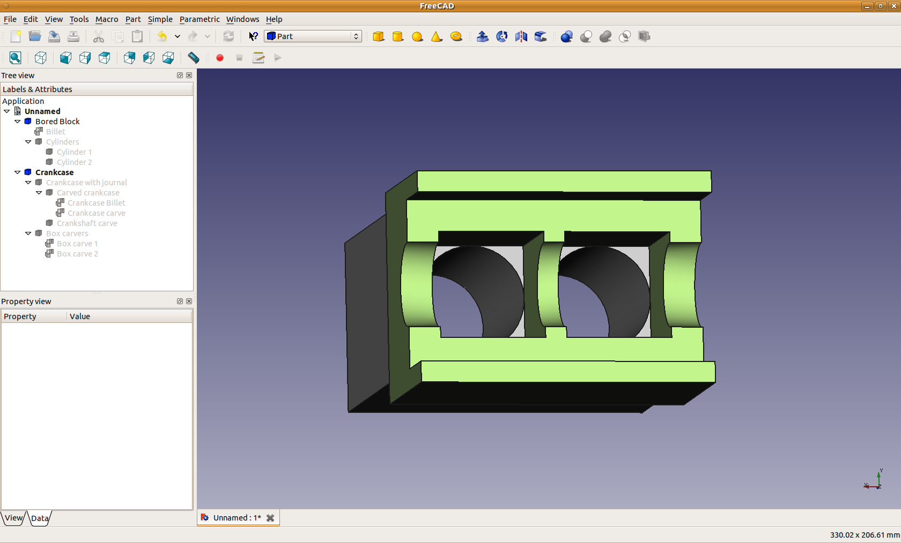
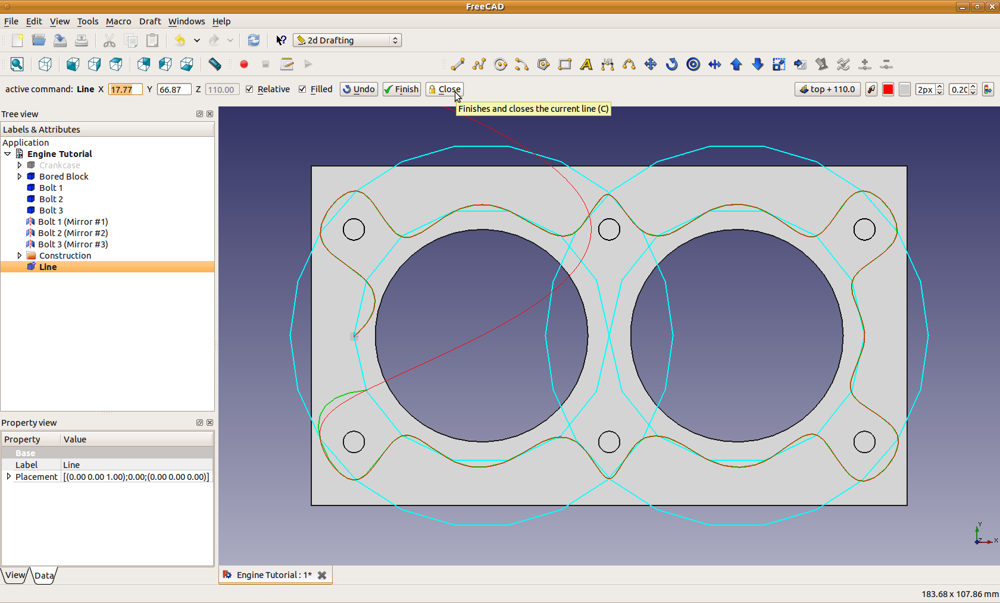
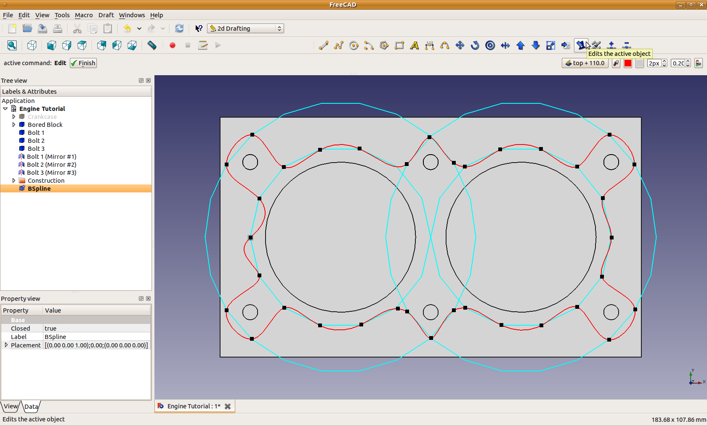

Engine Block Tutorial/pl
Ta dokumentacja nie jest ukończona. Prosimy o pomoc w tworzeniu dokumentacji.
Strona Model polecenia GUI wyjaśnia jak powinny być dokumentowane polecenia. Przejrzyj stronę Category:UnfinishedDocu, aby zobaczyć więcej niekompletnych stron, takich jak ta. Zobacz stronę Category:Command Reference aby poznać wszystkie komendy.
Zobacz stronę wytycznych Wiki dla FreeCAD aby dowiedzieć się, jak edytować strony Wiki, i przejdź do strony Pomóż w rozwoju FreeCAD, aby dowiedzieć się o innych sposobach, w jakie możesz wnieść swój wkład.
| Temat |
|---|
| środowisko pracy Część |
| Poziom trudności |
| początkujący |
| Czas wykonania |
| 1 godzina |
| Autorzy |
| Andrewbuck40 |
| Wersja FreeCAD |
| 0.14.3700 |
| Pliki z przykładami |
| nie dołączono |
| Zobacz również |
| - |
{kind=link}

Jest to samouczek wprowadzający do modelowania w FreeCAD. Celem tego samouczka jest zapoznanie użytkownika z pierwotnymi typami danych dla obiektów parametrycznych, operacjami logicznymi, szkicowaniem 2D i procesem konwersji szkiców 2D na modele 3D. Jako przykład roboczy będziemy modelować prosty blok silnika i skrzynię korbową, widoczne na górze.
Pierwsze kroki
Aby rozpocząć, uruchom FreeCAD, przejdź do Plik → Nowy, aby utworzyć nowy dokument, a następnie Plik → Zapisz, aby zapisać go gdzieś na komputerze, ja nazwałem swój projekt "Silnik"'. Zauważysz, że po zapisaniu projektu, "widok drzewa" po lewej stronie ekranu pokaże nazwę projektu, nad którym pracujesz. W tym samym czasie można otworzyć więcej niż jeden projekt, a każdy z nich będzie wyświetlany jako korzeń drzewa w widoku drzewa.
Zgrubne modelowanie bloku
Teraz zaczniemy pracę nad właściwym modelem. Zaczniemy od dodania prostopadłościanu, który określi ogólny zarys bloku silnika. Aby to zrobić, musimy dodać część do modelu. Przejdź do Widok → Środowisko pracy → Część, aby wybrać środowisko pracy Część. Zauważysz, że po wybraniu środowiska pracy pojawia się inny zestaw przycisków paska narzędzi u góry. Przejrzyj kilka innych środowisk pracy, aby zapoznać się z systemem środowisk pracy, a następnie wróć do środowiska pracy Część.
Półfabrykat
W środowisku pracy Część zobaczysz wiele przycisków dla obiektów prymitywnych, takich jak prostopadłościan, kula, stożek itd. Kliknij przycisk prostopadłościanu ( ), aby dodać sześcian do sceny. Każdy z wymienionych prymitywów ma domyślny zestaw parametrów ustawianych w momencie dodania obiektu. Jeśli chcesz, możesz dodać po jednym z każdego prymitywu, aby zobaczyć, jak wyglądają. Prymitywy można usunąć ze sceny, zaznaczając je i naciskając klawisz Delete. Istnieją dwa sposoby zaznaczania obiektów: możesz kliknąć je lewym przyciskiem myszy w widoku 3D albo kliknąć je lewym przyciskiem myszy w widoku drzewa. W obu przypadkach przytrzymanie Ctrl pozwala zaznaczyć wiele elementów. Widok 3D możesz przybliżać kółkiem myszy. Aby przesuwać widok, kliknij środkowym przyciskiem myszy i przeciągnij. Aby obracać widok, kliknij i przytrzymaj środkowy przycisk myszy, a następnie - nadal go trzymając – naciśnij i przytrzymaj także lewy przycisk myszy; przeciąganie myszy będzie wtedy obracało widok. Możesz też pojedynczo kliknąć środkowym przyciskiem myszy w dowolnym miejscu obiektu 3D, aby ustawić punkt, wokół którego będzie obracał się widok w przestrzeni 3D. Dodatkowo klawisze 1–6 oraz 0 na klawiaturze numerycznej pokazują różne widoki sceny (z góry, z lewej, aksonometryczny itd.). Poświęć minutę lub dwie, aby oswoić się z manipulowaniem Widokiem 3D.
), aby dodać sześcian do sceny. Każdy z wymienionych prymitywów ma domyślny zestaw parametrów ustawianych w momencie dodania obiektu. Jeśli chcesz, możesz dodać po jednym z każdego prymitywu, aby zobaczyć, jak wyglądają. Prymitywy można usunąć ze sceny, zaznaczając je i naciskając klawisz Delete. Istnieją dwa sposoby zaznaczania obiektów: możesz kliknąć je lewym przyciskiem myszy w widoku 3D albo kliknąć je lewym przyciskiem myszy w widoku drzewa. W obu przypadkach przytrzymanie Ctrl pozwala zaznaczyć wiele elementów. Widok 3D możesz przybliżać kółkiem myszy. Aby przesuwać widok, kliknij środkowym przyciskiem myszy i przeciągnij. Aby obracać widok, kliknij i przytrzymaj środkowy przycisk myszy, a następnie - nadal go trzymając – naciśnij i przytrzymaj także lewy przycisk myszy; przeciąganie myszy będzie wtedy obracało widok. Możesz też pojedynczo kliknąć środkowym przyciskiem myszy w dowolnym miejscu obiektu 3D, aby ustawić punkt, wokół którego będzie obracał się widok w przestrzeni 3D. Dodatkowo klawisze 1–6 oraz 0 na klawiaturze numerycznej pokazują różne widoki sceny (z góry, z lewej, aksonometryczny itd.). Poświęć minutę lub dwie, aby oswoić się z manipulowaniem Widokiem 3D.
- Więcej informacji: Nawigacja w przestrzeni 3D
Gdy masz już swój sześcian i czujesz się swobodnie z obsługą myszy, zaczniemy ustawiać wymiary modelu CAD. Zaznacz Cube, klikając go w widoku drzewa, a następnie kliknij zakładkę Dane w Widoku właściwości znajdującym się poniżej widoku drzewa (jeśli został zamknięty, przejdź do Widok → Panele → Widok połączony). W zakładce Dane możesz modyfikować właściwości obiektu wybranego w widoku drzewa. W zależności od rodzaju wybranego obiektu dostępne będą różne parametry do ustawienia w zakładce Dane. Dla prostopadłościanu potrzebne są trzy wektory: jeden określający jego położenie w przestrzeni 3D, drugi jego orientację, a trzeci określający wymiary prostopadłościanu. W przypadku kuli można określić punkt centralny i promień; stożki mają promień, wysokość i położenie; i tak dalej. Budujemy mały blok silnika dwucylindrowego, więc ustaw rozmiar i położenie prostopadłościanu na następujące wartości (upewnij się, że ustawiasz XYZ w sekcji Position; wartości w sekcji Axis określają oś obrotu i wartości domyślne są w tym przypadku właściwe):
X: 0.0 mm Długość: 140.0 mm Y: -40.0 mm Szerokość: 80.0 mm Z: 0.0 mm Wysokość: 110.0 mm
Teraz, gdy blok silnika ma już prawidłowo ustawione wymiary, powinniśmy nadać mu bardziej opisową nazwę. Zaznacz go w widoku drzewa i kliknij prawym przyciskiem myszy, aby zmienić nazwę, lub naciśnij klawisz F2 na klawiaturze. Nazwij tę część Billet.
Pierwszy cylinder
Następnie wykonamy pierwszy cylinder przechodzący przez cały blok silnika. Aby to zrobić, dodamy do modelu cylinder o rozmiarze odpowiadającym planowanemu otworowi, a następnie wykonamy operację logiczną, aby odjąć materiał od bloku. Kliknij przycisk dodawania cylindra ( ), aby utworzyć nowy cylinder, a następnie zaznacz go w widoku drzewa i ustaw jego właściwości na następujące wartości:
), aby utworzyć nowy cylinder, a następnie zaznacz go w widoku drzewa i ustaw jego właściwości na następujące wartości:
X: 40.0 mm Wysokość: 110.0 mm Y: 0.0 mm Promień: 25.0 mm Z: 0.0 mm
Po poprawnym ustawieniu właściwości powinieneś zobaczyć okrągłe końce cylindra na górnej i dolnej powierzchni bloku silnika. Nadaj temu obiektowi nazwę Cylinder 1, zaznaczając go w Widoku drzewa.
Drugi cylinder
Drugi cylinder moglibyśmy wykonać w taki sam sposób jak pierwszy, jednak znacznie łatwiej będzie po prostu skopiować istniejący obiekt, ponieważ jedyną różnicą między nimi jest współrzędna X. Aby to zrobić, zaznacz Cylinder 1 w widoku drzewa, a następnie przejdź do Edycja → Powiel zaznaczenie. W widoku drzewa pojawi się nowy cylinder (od razu nazwij go Cylinder 2), jednak nie będzie go widać w widoku 3D, ponieważ znajduje się dokładnie w tym samym miejscu co pierwszy cylinder. Teraz zaznacz Cylinder 2 w Widoku drzewa i zmień jego współrzędną X na 100 mm. Zauważ, że już podczas zmieniania wartości w polu danych cylinder będzie przesuwał się w widoku 3D. Gdy drugi cylinder zostanie prawidłowo ustawiony, możesz zobaczyć, jak wyglądają razem, zaznaczając Billet w widoku drzewa i naciskając Spacebar, aby go ukryć (zauważ, że ukryte obiekty są wyszarzone w Widoku drzewa). Ukryj po kolei wszystkie trzy obiekty, a następnie ponownie pokaż je wszystkie.
Wywiercanie Cylindrów
{kind=link}

Teraz, gdy oba cylindry są już na miejscu, chcemy użyć ich do wykonania otworów w bloku o odpowiednich wymiarach. W tym celu użyjemy operacji logicznych na naszych trzech prymitywach. Zaczniemy od utworzenia sumy obu cylindrów, aby móc odjąć je jako jedną całość od bloku. Zaznacz Cylinder 1 w widoku drzewa, a następnie CTRL + kliknij lewym przyciskiem myszy, aby zaznaczyć również Cylinder 2. Teraz naciśnij przycisk Union ( ), aby scalić obiekty. Zauważysz, że w widoku drzewa pojawił się nowy obiekt o nazwie Fusion. Jeśli klikniesz strzałkę rozwijania obok Fusion, zobaczysz dwa cylindry, ale będą one wyszarzone. Zamiast Fusion zmień nazwę tego obiektu na Cylinders, aby łatwiej było go później znaleźć. Teraz wykonamy otwory w bloku silnika. Zaznacz Billet, a następnie zaznacz Cylinders i naciśnij przycisk Make Cut (
), aby scalić obiekty. Zauważysz, że w widoku drzewa pojawił się nowy obiekt o nazwie Fusion. Jeśli klikniesz strzałkę rozwijania obok Fusion, zobaczysz dwa cylindry, ale będą one wyszarzone. Zamiast Fusion zmień nazwę tego obiektu na Cylinders, aby łatwiej było go później znaleźć. Teraz wykonamy otwory w bloku silnika. Zaznacz Billet, a następnie zaznacz Cylinders i naciśnij przycisk Make Cut ( ). Dwa zaznaczone obiekty zostaną ponownie połączone - podobnie jak w operacji sumy - a powstały pojedynczy obiekt będzie miał nazwę Cut (którą powinieneś zmienić na Bored Block). Naciśnij klawisz 2 na klawiaturze numerycznej i powinieneś teraz móc patrzeć prosto w dół przez cylindry na drugą stronę bloku silnika, a następnie użyj kombinacji Środkowy przycisk myszy + Lewy przycisk myszy + przeciągnięcie, aby obejrzeć blok silnika. Po prawej stronie zobaczysz, jak powinien wyglądać gotowy model; zwróć uwagę, że rozwinąłem widok drzewa po lewej, aby pokazać poszczególne prymitywy, oraz zaznaczyłem Cylinder 2 do sprawdzenia w zakładce Dane w Widoku właściwości.
). Dwa zaznaczone obiekty zostaną ponownie połączone - podobnie jak w operacji sumy - a powstały pojedynczy obiekt będzie miał nazwę Cut (którą powinieneś zmienić na Bored Block). Naciśnij klawisz 2 na klawiaturze numerycznej i powinieneś teraz móc patrzeć prosto w dół przez cylindry na drugą stronę bloku silnika, a następnie użyj kombinacji Środkowy przycisk myszy + Lewy przycisk myszy + przeciągnięcie, aby obejrzeć blok silnika. Po prawej stronie zobaczysz, jak powinien wyglądać gotowy model; zwróć uwagę, że rozwinąłem widok drzewa po lewej, aby pokazać poszczególne prymitywy, oraz zaznaczyłem Cylinder 2 do sprawdzenia w zakładce Dane w Widoku właściwości.
Kluczowa zaleta modelowania parametrycznego
Teraz, gdy wykonaliśmy już otwory cylindrów, zatrzymajmy się na chwilę, aby zobaczyć jedną z zalet tego systemu. Załóżmy, że na pewnym etapie projektowania okaże się, że cylindry powinny być nieco większe. Ponieważ operacje sumy i przecięcia, które wykonaliśmy, zostały zapisane jako grupy w widoku drzewa, możemy zmienić rozmiar cylindra, a FreeCAD po prostu ponownie wykona operacje sumy i przecięcia, uzyskując nowy rozmiar bloku silnika. Pobaw się chwilę promieniem i położeniem obu cylindrów, a następnie przywróć je do parametrów podanych powyżej, zanim przejdziesz dalej w samouczku.
Skrzynia korbowa
Półfabrykat i pokrywy łożysk
Następnie zajmiemy się skrzynią korbową pod blokiem silnika. Dodaj nowy prostopadłościan, zmień jego nazwę na Crankcase Billet i nadaj mu następujące właściwości:
X: 0.0 mm Długość: 140.0 mm Y: -50.0 mm Szerokość: 100.0 mm Z: -85.0 mm Wysokość: 85.0 mm
Aby odróżnić skrzynię korbową od bloku, nadajmy jednemu z nich inny kolor. Kolor można zmienić, klikając prawym przyciskiem myszy na obiekt w widoku drzewa. Możesz przypisać kolor samodzielnie lub nadać obiektowi losowy kolor (wybierz losowy ponownie, jeśli kolor Ci się nie podoba).
Dodaj kolejny prostopadłościan o nazwie Bearing carve, nadaj mu następujące właściwości, a następnie odetnij Bearing carve od Crankcase Billet (czyli najpierw zaznacz półfabrykat):
X: 0.0 mm Długość: 140.0 mm Y: -40.0 mm Szerokość: 80.0 mm Z: -85.0 mm Wysokość: 30.0 mm
Zmień nazwę powstałego obiektu Cut na Carved crankcase.
Wykrawanie panew
Następnie wycinamy półkoliste miejsce, w którym będzie osadzony wał korbowy, oraz przestrzeń w skrzyni korbowej, aby mógł się swobodnie obracać. Zaczniemy od cylindra, ale domyślny cylinder jest ustawiony pionowo, podczas gdy potrzebujemy cylindra poziomego. Oznacza to, że musimy ustalić, jak obrócić cylinder, aby prawidłowo wyrównać go z silnikiem. Jeśli spojrzysz na osie orientacyjne w prawym dolnym rogu okna 3D, zobaczysz, że wał korbowy powinien leżeć wzdłuż dodatniej osi X. Oznacza to, że od początkowego położenia należy obrócić cylinder o 90 stopni wokół osi równoległej do osi Y sceny. To pokazuje, jakie parametry musimy wpisać dla cylindra. Utwórz cylinder o nazwie Crankshaft carve i nadaj mu następujące właściwości (zauważ, że teraz musimy określić parametry orientacji, oprócz standardowych wymiarów, które stosowaliśmy przy wycinaniu otworów cylindrów):
Oś X: 0.0 mm Kąt: 90.0 stopni Oś Y: 1.0 mm Oś Z: 0.0 mm Pozycja X: 0.0 mm Wysokość: 140.0 mm Pozycja Y: 0.0 mm Promień: 20.0 mm Pozycja Z: -55.0 mm
Odetnij obiekt Crankshaft carve od Carved crankcase i zmień nazwę powstałego obiektu na crankcase with journals.
Wykańczanie skrzyni korbowej
Na koniec wytnij dwa ostatnie prostopadłościany, aby korbowody mogły sięgać ze skrzyni korbowej do bloku silnika. Utwórz dwa obiekty o nazwach Box carve 1' i Box carve 2 z następującymi właściwościami; możesz też skopiować Box carve 1 i zmienić tylko współrzędną X, aby uzyskać drugi wycinacz. Połącz je w jeden obiekt o nazwie Box carvers, a następnie odetnij ten obiekt od Crankcase with journals, nadając powstałemu obiektowi ostateczną nazwę Crankcase. Pamiętaj, że możesz ukryć Bored block, zaznaczając go i naciskając spację, aby lepiej widzieć, co robisz.
X: 15.0 mm Długość: 50.0 mm Y: -25.0 mm Szerokość: 50.0 mm Z: -55.0 mm Wysokość: 55.0 mm
X: 75.0 mm Długość: 50.0 mm Y: -25.0 mm Szerokość: 50.0 mm Z: -55.0 mm Wysokość: 55.0 mm
{kind=link}

Po prawej stronie możesz zobaczyć, jak powinien wyglądać ostateczny efekt. W pełni rozwinąłem widok drzewa, aby pokazać hierarchię operacji boolowskich użytych do zbudowania modelu. Pamiętaj, że nadal możesz zagłębiać się w to drzewo i zmieniać średnice cylindrów, rozmiar lub położenie wału korbowego itd., bez potrzeby odbudowywania całego modelu od zera. Moglibyśmy kontynuować dalsze wykrawanie skrzyni korbowej, ale na razie to wystarczy. Następnie zajmiemy się wykorzystaniem trybu rysunku 2D, aby zaprojektować układ śrub głowicy i zmniejszyć wagę bloku silnika, usuwając większość zbędnego półfabrykatu stalowego pozostającego wokół cylindrów.
Rysunek 2D – projekt uszczelki głowicy
Do śrub głowicy i kształtu bloku silnika użyjemy kolejnych operacji boolowskich, aby "wykroić" części bloku, których nie potrzebujemy. Jednak jeśli się nad tym zastanowić, każda śruba głowicy będzie wyglądać tak samo i będzie przechodzić aż do skrzyni korbowej; jedyną różnicą będzie jej położenie na górze głowicy. Oznacza to, że możemy po prostu „narysować” kształt uszczelki głowicy na górze silnika, a następnie użyć tego wzoru do wykonania wykrawania, które chcemy zrobić.
Przejście do trybu rysunku 2D
Najpierw musimy przełączyć się do środowiska pracy 2D Drafting. Aby to zrobić z trybu Part, wybierz 2D Drafting z rozwijanego pola u góry, które obecnie pokazuje Part. Jeśli nie możesz znaleźć tego pola (nie wszystkie środowiska pracy je pokazują), możesz również wybrać środowisko pracy z menu Widok → Środowisko pracy. Chociaż tworzymy rysunek 2D, będziemy go rysować w oknie 3D, wskazując FreeCAD, na jakiej płaszczyźnie mają być projektowane elementy. Po wybraniu środowiska 2D Drafting, tuż nad prawym górnym rogiem widoku 3D kliknij najbardziej lewy przycisk, który może wyświetlać jedną z następujących opcji: {none, top, front, size, lub d(..., ..., ...)}. Po kliknięciu po lewej stronie paska pojawi się pole tekstowe do wpisania przesunięcia płaszczyzny oraz 5 przycisków: XY, XZ, YZ, Widok i Brak. Pierwsze trzy to standardowe widoki: górny, przedni i boczny. Opcja Widok użyje płaszczyzny prostopadłej do kierunku patrzenia kamery (plane widoku kamery), a ostatnia opcja pozwala na pełne definiowanie współrzędnych XYZ dla każdego punktu. Ustaw przesunięcie płaszczyzny na 110 mm (wpisz i naciśnij Enter), a następnie kliknij przycisk XY, aby rzutować rysunek na płaszczyznę XY, położoną 110 mm wzdłuż osi Z, co odpowiada górze bloku silnika. Teraz, gdy powiedzieliśmy FreeCAD, na jakiej płaszczyźnie rysować, możemy rozpocząć projektowanie uszczelki głowicy.
Ostatnią rzeczą jest ustawienie widoku 3D. Chociaż wszystkie rysunki będą rzutowane na wcześniej zdefiniowaną płaszczyznę 2D, możemy patrzeć na tę płaszczyznę pod dowolnym kątem (w tym z drugiej strony, aby rysować "od tyłu"). Ponieważ ustaliliśmy, że płaszczyzna jest współpłaszczyznowa z górą bloku silnika, warto ustawić widok 3D tak, aby patrzył mniej więcej w tym kierunku. Naciśnij klawisz 2 na klawiaturze numerycznej, aby przejść do widoku z góry (zauważ, że na klawiaturze numerycznej sąsiednie klawisze to przeciwne widoki: 1 i 4 - przód-tył, 2 i 5 - góra-dół, 3 i 6 - prawo-lewo). Gdy patrzysz na silnik z góry, możesz go wyśrodkować, przeciągając środkowym przyciskiem myszy, aby przesunąć widok. Tryb rysunku 2D pozwala również przyciągać elementy rysunku do narożników bloku silnika, do środka cylindrów itp. Aby to działało najlepiej, powinniśmy ukryć skrzynię korbową, tak aby rysunki przyciągały się tylko do części, nad którą pracujemy (naciśnij spację, aby pokazać/ukryć wybrany obiekt).
Rozmieszczanie śrub głowicy
Gdy odpowiednia projekcja płaszczyzny i widok są już ustawione, możemy dodawać elementy rysunku 2D w taki sam sposób, w jaki dodawaliśmy prymitywy. Kliknij przycisk Add Circle ( ) i przesuwaj mysz w widoku 3D. Następnie musisz podać FreeCAD współrzędne XY środka okręgu oraz promień. Obie te wartości możesz wprowadzić za pomocą myszy (postępując zgodnie z instrukcjami w lewym dolnym pasku stanu) lub wpisać je w polach tekstowych pojawiających się nad widokiem drzewa. Dodaj kilka losowych okręgów na górze silnika, a także kilka poza silnikiem, czyli w pustej przestrzeni wokół widoku bloku. Gdy to zrobisz, obróć kamerę wokół góry bloku silnika i spójrz na narysowane okręgi - zauważysz, że są "spłaszczone" w płaszczyźnie, na którą je rzutowaliśmy, a płaszczyzna ta pokrywa się z górą bloku silnika. Będzie to istotne, gdy później wytniemy rysunek, aby ukształtować silnik. Teraz, gdy wiesz, jak dodawać elementy 2D, możesz usunąć testowe okręgi i rozpocząć wprowadzanie faktycznego układu śrub głowicy. Zwróć uwagę: jeśli okrąg znika wewnątrz bloku silnika, oznacza to, że płaszczyzna projekcji rysunku nie jest prawidłowo ustawiona w trybie XY z przesunięciem 110 mm.
) i przesuwaj mysz w widoku 3D. Następnie musisz podać FreeCAD współrzędne XY środka okręgu oraz promień. Obie te wartości możesz wprowadzić za pomocą myszy (postępując zgodnie z instrukcjami w lewym dolnym pasku stanu) lub wpisać je w polach tekstowych pojawiających się nad widokiem drzewa. Dodaj kilka losowych okręgów na górze silnika, a także kilka poza silnikiem, czyli w pustej przestrzeni wokół widoku bloku. Gdy to zrobisz, obróć kamerę wokół góry bloku silnika i spójrz na narysowane okręgi - zauważysz, że są "spłaszczone" w płaszczyźnie, na którą je rzutowaliśmy, a płaszczyzna ta pokrywa się z górą bloku silnika. Będzie to istotne, gdy później wytniemy rysunek, aby ukształtować silnik. Teraz, gdy wiesz, jak dodawać elementy 2D, możesz usunąć testowe okręgi i rozpocząć wprowadzanie faktycznego układu śrub głowicy. Zwróć uwagę: jeśli okrąg znika wewnątrz bloku silnika, oznacza to, że płaszczyzna projekcji rysunku nie jest prawidłowo ustawiona w trybie XY z przesunięciem 110 mm.
Dodawanie elementów rysunku za pomocą myszy jest szybkie i wygodne, ale nie daje dużej precyzji. Dla rzeczywistego układu śrub możemy wykorzystać fakt, że przesuwanie myszy aktualizuje wartości w polach tekstowych tuż nad widokiem 3D, dzięki czemu widzimy w przybliżeniu współrzędne miejsca, w którym chcemy umieścić elementy. Gdy mamy już przybliżone współrzędne, możemy wpisać dokładne wartości, aby precyzyjnie ustawić elementy. Przywróć widok z góry silnika, kliknij przycisk Add Circle i przesuwaj mysz w lewym górnym narożniku bloku silnika, zwracając uwagę na dobre miejsce dla śruby głowicy. Wygląda na to, że X=10, Y=30 będzie odpowiednią lokalizacją okręgu (zwróć uwagę, że współrzędna Z powinna być wyszarzona; jeśli tak nie jest, musisz ustawić płaszczyznę poprawnie, jak w poprzedniej sekcji – naciśnięcie Escape anulowało rysowanie okręgu).
Teraz, gdy wiesz, jak łatwo określić współrzędne elementów rysunku, możesz z łatwością zaprojektować układ śrub lub inny dwuwymiarowy schemat dla części, takich jak kanały płynów, ścieżki na płytkach drukowanych itp. Dla naszych 3 śrub głowicy po tej stronie silnika użyjemy następujących współrzędnych. Zwróć uwagę, że podczas wpisywania wartości w pola możesz nacisnąć Enter, aby przejść do następnego pola. Dobrym pomysłem jest też przesunięcie myszy poza widok 3D przed rozpoczęciem wpisywania współrzędnych, ponieważ zbyt duży ruch myszy może nadpisać wartości już wpisane w polach tekstowych. Na moim systemie wpisane okręgi czasami miały współrzędną Z ustawioną na 12,5. Jeśli napotkasz ten problem, możesz ustawić płaszczyznę projekcji rysunku na None, a następnie ręcznie wpisać współrzędną Z dla okręgów jako 110. Na koniec, podczas tworzenia okręgów, upewnij się, że zaznaczono pole Filled, w przeciwnym razie przy późniejszym wytłaczaniu utworzą one jedynie rurki, jak rolka papieru toaletowego, zamiast pełnych cylindrów.
X1: 10 Y1: 25 Promień: 2.5 mm X2: 70 Y2: 25 Promień: 2.5 mm X3: 130 Y3: 25 Promień: 2.5 mm
Nazwij te okręgi Bolt 1 do Bolt 3.
Druga strona bloku
Gdy pierwsze trzy śruby głowicy są już rozmieszczone po jednej stronie silnika, potrzebujemy jeszcze trzech odbitych lustrzanie po drugiej stronie. Możemy to zrobić na trzy sposoby:
- Możemy po prostu kontynuować dodawanie okręgów tak, jak dla pierwszych trzech, i odwrócić współrzędne Y, aby umieścić śruby po drugiej stronie silnika.
- Możemy zaznaczyć trzy dodane okręgi, przejść do Edytuj → Powiel zaznaczenie, a następnie odwrócić współrzędne Y dla trzech nowych okręgów.
- Możemy użyć funkcji odbicia lustrzanego w środowisku Część.
Ponieważ powinieneś już znać sposób pierwszy i drugi, w tym przykładzie użyjemy metody trzeciej. Każda z trzech metod ma swoje zalety i wady, ale dobrą zasadą jest, że proste modele (takie jak ten) najlepiej tworzyć za pomocą metody pierwszej lub drugiej, natomiast modele z dużą liczbą powtórzeń i/lub powielaniem bardzo skomplikowanych kształtów/obiektów najlepiej wykorzystują metodę trzecią.
Chociaż jest to trochę przesadne, użyjemy odbicia lustrzanego tych śrub jako demonstracji. Przełącz się z powrotem do środowiska Część (pamiętaj, że zawsze możesz przejść do środowiska Complete, aby zobaczyć wszystkie narzędzia naraz, jeśli nie chcesz ciągle przełączać się między środowiskami - funkcja przestarzała od wersji 0.17) poprzez Widok → Środowisko pracy. Zaznacz trzy okręgi śrub w widoku drzewa, a następnie naciśnij przycisk mirror ( ). Po naciśnięciu przycisku pojawi się nowe okno o nazwie Widok połączony w panelu pod Widokiem drzewa. Wiele narzędzi wymaga dodatkowych danych wejściowych, zanim będzie mogło działać, a Widok połączony pozwala je wprowadzić. Możesz powiększyć okno Widoku połączonego, przeciągając linię dzielącą je od Property view w górę lub w dół. W Widoku połączonym wybierz Bolt 1 z listy i ustaw mirror plane na XZ, a następnie kliknij OK (to samo zrób dla Bolt 2 i 3).
). Po naciśnięciu przycisku pojawi się nowe okno o nazwie Widok połączony w panelu pod Widokiem drzewa. Wiele narzędzi wymaga dodatkowych danych wejściowych, zanim będzie mogło działać, a Widok połączony pozwala je wprowadzić. Możesz powiększyć okno Widoku połączonego, przeciągając linię dzielącą je od Property view w górę lub w dół. W Widoku połączonym wybierz Bolt 1 z listy i ustaw mirror plane na XZ, a następnie kliknij OK (to samo zrób dla Bolt 2 i 3).
W tym momencie powinieneś mieć podstawowy blok silnika z wywierconymi cylindrami oraz zaznaczonymi miejscami na śruby głowicy.
Usuwanie nadmiaru materiału półfabrykatu z bloku
Gdy mamy już zaznaczone otwory na śruby głowicy (to samo możemy zrobić dla kanałów olejowych, płaszczyzn wodnych itp.), będziemy chcieli "przyciąć" zewnętrzną część półfabrykatu bloku do bardziej odpowiedniego kształtu. Pozwoli to zmniejszyć wagę silnika, ułatwi jego chłodzenie oraz zmniejszy ilość stali potrzebnej do odlewu bloku. Podobnie jak przy układzie śrub, utworzymy rysunek 2D, który określi kształt, jaki chcemy uzyskać w gotowym produkcie. Możemy narysować krzywą spline bezpośrednio za pomocą myszy lub zastosować podejście hybrydowe, jak przy okręgach – używamy myszy, aby znaleźć przybliżone współrzędne, a następnie wpisujemy dokładne wartości. Ciekawszą metodą jest użycie trybu konstrukcyjnego w rysunku 2D, aby nanieść kilka pomocniczych kształtów, które posłużą jako prowadnice do narysowania ładnej, symetrycznej krzywej złożonej, przyciągając do tych pomocniczych elementów.
Jako prowadnicę narysujemy dla każdego cylindra dwa wielokąty foremne, koncentryczne względem cylindra. Aby rozpocząć, przełącz się na widok z góry bloku silnika, ukryj skrzynię korbową, wróć do środowiska 2D Drafting, ustaw przesunięcie płaszczyzny na 110 mm oraz tryb płaszczyzny XY (lub tryb Brak, jeśli wolisz), a następnie kliknij przycisk Tryb konstrukcyjny na pasku poleceń (przycisk trybu konstrukcyjnego wygląda jak kielnia i znajduje się tuż nad prawym górnym rogiem Widoku 3D). Tryb konstrukcyjny działa tak samo jak zwykły tryb rysunku, z tą różnicą, że wszystkie obiekty 2D stworzone w tym trybie są rysowane w innym kolorze i automatycznie umieszczane w osobnej grupie w widoku drzewa. Pozwala to ukryć rysunki pomocnicze, pozostawiając tylko rzeczywiste elementy, takie jak oznaczenia otworów pod śruby, albo usunąć wszystkie obiekty prowadnic, usuwając całą grupę.
- Dalsze informacje: Tryb konstrukcyjny
Teraz, gdy płaszczyzna rysunku jest prawidłowo ustawiona i jesteś w trybie konstrukcyjnym, kliknij przycisk Regular Polygon ( ) i przesuwaj mysz wzdłuż krawędzi lewego cylindra, przytrzymując klawisz CTRL. Powinieneś zobaczyć, że program przyciąga małą czarną kropkę albo do krawędzi cylindra, albo do jego środka, w zależności od miejsca, w którym znajduje się mysz. Przesuń ją tak, aby czarna kropka przyciągnęła się do środka cylindra i kliknij lewym przyciskiem myszy. W ten sposób ustalisz środek wielokąta w środku cylindra, a program poprosi o liczbę boków wielokąta i promień, w który jest wpisany. Przy użyciu myszy wygląda na to, że promień 30 mm będzie odpowiedni (wpisz tę wartość), a liczbę boków ustaw na 14, pozostawiając tym razem pole Filled odznaczone.
Jeśli przyciąganie nie zadziała i nie uda się złapać środka cylindra (ja miałem z tym problem), zawsze możesz wprowadzić współrzędne ręcznie: X=40, Y=0, Z=110. Dodaj drugi wielokąt, również wyśrodkowany na lewym cylindrze, ale tym razem z 22 bokami i promieniem 45 mm. Na koniec dodaj te same dwa wielokąty nad prawym cylindrem (środek: X=100, Y=0, Z=110). Po zakończeniu powinieneś mieć dwie figury w kształcie "ósemki" otaczające cylindry i śruby głowicy.
(Uwaga: obecnie program nie pyta automatycznie o liczbę boków, więc musisz ustawić środek i promień, a następnie zmienić liczbę boków w Widoku właściwości).
) i przesuwaj mysz wzdłuż krawędzi lewego cylindra, przytrzymując klawisz CTRL. Powinieneś zobaczyć, że program przyciąga małą czarną kropkę albo do krawędzi cylindra, albo do jego środka, w zależności od miejsca, w którym znajduje się mysz. Przesuń ją tak, aby czarna kropka przyciągnęła się do środka cylindra i kliknij lewym przyciskiem myszy. W ten sposób ustalisz środek wielokąta w środku cylindra, a program poprosi o liczbę boków wielokąta i promień, w który jest wpisany. Przy użyciu myszy wygląda na to, że promień 30 mm będzie odpowiedni (wpisz tę wartość), a liczbę boków ustaw na 14, pozostawiając tym razem pole Filled odznaczone.
Jeśli przyciąganie nie zadziała i nie uda się złapać środka cylindra (ja miałem z tym problem), zawsze możesz wprowadzić współrzędne ręcznie: X=40, Y=0, Z=110. Dodaj drugi wielokąt, również wyśrodkowany na lewym cylindrze, ale tym razem z 22 bokami i promieniem 45 mm. Na koniec dodaj te same dwa wielokąty nad prawym cylindrem (środek: X=100, Y=0, Z=110). Po zakończeniu powinieneś mieć dwie figury w kształcie "ósemki" otaczające cylindry i śruby głowicy.
(Uwaga: obecnie program nie pyta automatycznie o liczbę boków, więc musisz ustawić środek i promień, a następnie zmienić liczbę boków w Widoku właściwości).
{kind=link}

Teraz, gdy nasze wielokąty prowadnic są już na miejscu, możemy narysować krzywą spline definiującą zewnętrzny kształt bloku silnika. Ponieważ ta krzywa będzie częścią końcowego obiektu, możesz wyłączyć tryb konstrukcyjny, klikając ten sam przycisk, którego użyłeś do jego włączenia. Kliknij przycisk Add BSpline ( ) i rozpocznij rysowanie BSpline, przytrzymując CTRL i klikając lewym przyciskiem myszy w miejscach, w których chcesz dodać punkty kontrolne krzywej. Pierwszy punkt kontrolny powinien znajdować się na najbardziej lewym wierzchołku wewnętrznego wielokąta prowadnicowego dla lewego cylindra. Kontynuuj dodawanie punktów kontrolnych wzdłuż krzywej spline aż do ostatniego punktu przed punktem początkowym, a następnie kliknij przycisk Zamknij znajdujący się w tym samym miejscu, gdzie wpisywałeś współrzędne i promień dla okręgów śrub głowicy. Kliknięcie przycisku Close kończy rysowanie punktów kontrolnych spline i łączy końce, tworząc zamkniętą pętlę. Jest to bardzo ważne, aby poprawnie zamykać pętle w przypadku planowanego wytłaczania ich do brył, jak zrobimy to w tym przypadku. Dla otwartych krzywych spline wystarczy kliknąć przycisk Zakończ, zamiast Zamknij, po zakończeniu rysowania. Po prawej możesz zobaczyć, jak powinna wyglądać ukończona krzywa spline tuż przed kliknięciem przycisku Zamknij (zauważ, że narysowałem wszystkie segmenty oprócz ostatniego, a wskaźnik myszy jest tuż nad przyciskiem Zamknij gotowy do kliknięcia). Dodatkowo zaznaczyłem pole Wypełnione, aby powstała krzywa spline tworzyła pełną płaszczyznę, a nie pustą obręcz – jest to konieczne, aby móc wytłaczać ją do bryły zamkniętej na końcach.
) i rozpocznij rysowanie BSpline, przytrzymując CTRL i klikając lewym przyciskiem myszy w miejscach, w których chcesz dodać punkty kontrolne krzywej. Pierwszy punkt kontrolny powinien znajdować się na najbardziej lewym wierzchołku wewnętrznego wielokąta prowadnicowego dla lewego cylindra. Kontynuuj dodawanie punktów kontrolnych wzdłuż krzywej spline aż do ostatniego punktu przed punktem początkowym, a następnie kliknij przycisk Zamknij znajdujący się w tym samym miejscu, gdzie wpisywałeś współrzędne i promień dla okręgów śrub głowicy. Kliknięcie przycisku Close kończy rysowanie punktów kontrolnych spline i łączy końce, tworząc zamkniętą pętlę. Jest to bardzo ważne, aby poprawnie zamykać pętle w przypadku planowanego wytłaczania ich do brył, jak zrobimy to w tym przypadku. Dla otwartych krzywych spline wystarczy kliknąć przycisk Zakończ, zamiast Zamknij, po zakończeniu rysowania. Po prawej możesz zobaczyć, jak powinna wyglądać ukończona krzywa spline tuż przed kliknięciem przycisku Zamknij (zauważ, że narysowałem wszystkie segmenty oprócz ostatniego, a wskaźnik myszy jest tuż nad przyciskiem Zamknij gotowy do kliknięcia). Dodatkowo zaznaczyłem pole Wypełnione, aby powstała krzywa spline tworzyła pełną płaszczyznę, a nie pustą obręcz – jest to konieczne, aby móc wytłaczać ją do bryły zamkniętej na końcach.
{kind=link}

Punkty kontrolne nie są widoczne na poprzednim obrazku, dlatego dodałem drugi zrzut ekranu pokazujący ukończoną krzywą spline w trybie edycji (kliknij przycisk Tryb edycji, aby włączyć lub wyłączyć edycję zaznaczonego obiektu; upewnij się, że wyłączysz ten tryb po zakończeniu edycji lub po prostu pomiń ten krok, jeśli kształt bloku silnika Ci odpowiada). Zauważ także, że na najbardziej lewym brzegu krzywej spline występuje drobna nieciągłość, mimo że krzywa jest prawidłowo zamknięta – jest to błąd w działaniu programu, który jest obecnie naprawiany. W związku z tym Twoja krzywa spline może wyglądać nieco inaczej, jeśli korzystasz z nowszej wersji oprogramowania niż ta dostępna obecnie.
Wytłaczanie projektu głowicy 2D do naszego modelu 3D w celu ukończenia projektu
Teraz zbliżamy się do ostatecznego projektu silnika. Wróć do środowiska Część i kliknij przycisk Wyciągnij szkic ( ). W wyskakującym oknie combo użyj CTRL+Lewy przycisk myszy, aby zaznaczyć 6 otworów pod śruby głowicy oraz krzywą spline do wyciągnięcia. Domyślny kierunek to dodatnia oś Z, my chcemy, aby projekt głowicy był wyciągnięty "w dół" do wnętrza bloku, więc ustaw kierunek na X=0, Y=0 i Z=-1, a długość wpisz jako 110 (wysokość bloku silnika). Po wprowadzeniu wszystkich wartości i kliknięciu OK, okręgi dla śrub zostaną wyciągnięte w dół, tworząc cylindry, a spline zostanie wyciągnięty w dół, tworząc coś w rodzaju cylindra z "pofalowanymi" krawędziami. Zaznacz i ukryj Bored block, aby zobaczyć wyciągnięty spline, a następnie ukryj spline, aby zobaczyć 6 cylindrów pod śruby głowicy. Widać, że bardzo złożone kształty 3D można uzyskać, zaczynając od rysunku 2D i wyciągając jego części w dół. Można nawet wyciągać różne części rysunku na różną wysokość, np. wiercić otwory pod śruby tylko częściowo w bloku, ale tworzyć osobne kanały wodne przebiegające całkowicie. Na tym etapie wszystkie wyciągnięte obiekty mają nazwy typu "Extrude001...", więc warto je teraz nazwać, aby łatwo je rozpoznać w kolejnej części. Ja nazwę swoje obiekty Head bolt bore 1 do 6, a spline Extruded spline. Zalecam użycie tych samych nazw w Twoim modelu. Teraz, gdy masz już wytłoczone kształty, pozostało tylko kilka operacji logicznej, aby uzyskać ostateczny projekt bloku. Pokaż główne komponenty (Bored block i Crankcase) oraz wszystkie nowo utworzone obiekty wyciągnięte.
). W wyskakującym oknie combo użyj CTRL+Lewy przycisk myszy, aby zaznaczyć 6 otworów pod śruby głowicy oraz krzywą spline do wyciągnięcia. Domyślny kierunek to dodatnia oś Z, my chcemy, aby projekt głowicy był wyciągnięty "w dół" do wnętrza bloku, więc ustaw kierunek na X=0, Y=0 i Z=-1, a długość wpisz jako 110 (wysokość bloku silnika). Po wprowadzeniu wszystkich wartości i kliknięciu OK, okręgi dla śrub zostaną wyciągnięte w dół, tworząc cylindry, a spline zostanie wyciągnięty w dół, tworząc coś w rodzaju cylindra z "pofalowanymi" krawędziami. Zaznacz i ukryj Bored block, aby zobaczyć wyciągnięty spline, a następnie ukryj spline, aby zobaczyć 6 cylindrów pod śruby głowicy. Widać, że bardzo złożone kształty 3D można uzyskać, zaczynając od rysunku 2D i wyciągając jego części w dół. Można nawet wyciągać różne części rysunku na różną wysokość, np. wiercić otwory pod śruby tylko częściowo w bloku, ale tworzyć osobne kanały wodne przebiegające całkowicie. Na tym etapie wszystkie wyciągnięte obiekty mają nazwy typu "Extrude001...", więc warto je teraz nazwać, aby łatwo je rozpoznać w kolejnej części. Ja nazwę swoje obiekty Head bolt bore 1 do 6, a spline Extruded spline. Zalecam użycie tych samych nazw w Twoim modelu. Teraz, gdy masz już wytłoczone kształty, pozostało tylko kilka operacji logicznej, aby uzyskać ostateczny projekt bloku. Pokaż główne komponenty (Bored block i Crankcase) oraz wszystkie nowo utworzone obiekty wyciągnięte.
Teraz, gdy mamy obiekty 3D dla otworów pod śruby głowicy oraz dla zewnętrznego kształtu, możemy połączyć wszystko za pomocą kilku operacji boolean. Zaznacz w drzewie wszystkie 6 wytłoczonych otworów pod śruby głowicy i wykonaj operację scalenia (nadając wynikowemu obiektowi nazwę Head bolt boreholes). Następnie zaznacz kolejno Bored block oraz Head bolt boreholes i wykonaj wycięcie (tak jak przy rozwiercaniu cylindrów), a powstały obiekt nazwij Block with headbolts. Na koniec zaznacz Block with headbolts oraz Extruded spline i kliknij przycisk Utwórz przecięcie ( ), nadając wynikowemu obiektowi nazwę Engine block.
), nadając wynikowemu obiektowi nazwę Engine block.
Twój finalny obiekt powinien wyglądać tak jak na rysunku po prawej.